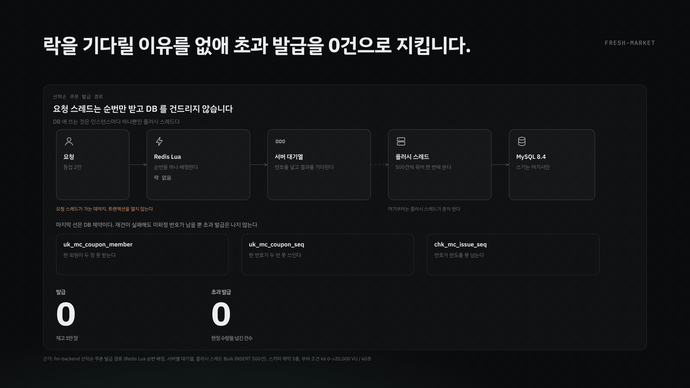
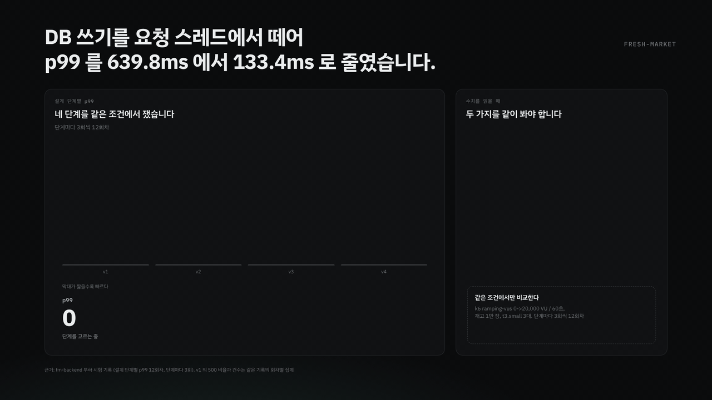
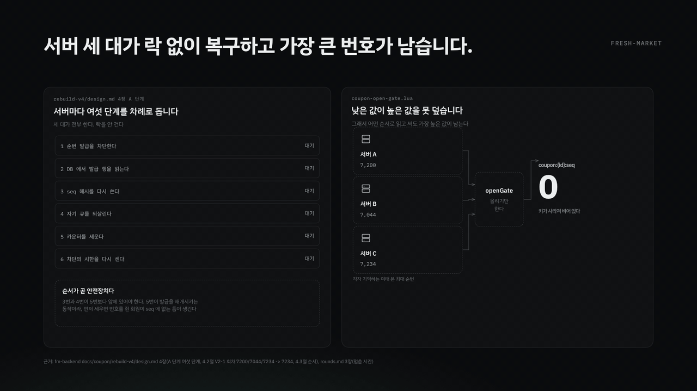
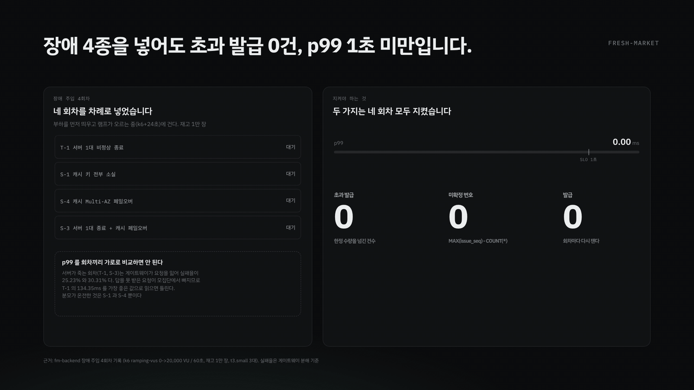

fresh-market / 선착순 쿠폰
동접 2만 명과 장애에도
선착순 쿠폰 발급의 설계와 장애 복구를 애니메이션 네 편으로 설명합니다.
수치는 모두 저장소의 부하 시험 기록과 설계 문서에서 가져왔고, 각 편 아래에 출처를 적었습니다.
부하 k6 ramping-vus 0 -> 20,000 VU / 60초재고 1만 장서버 t3.small 3대기간 2026.08 ~ 2026.09, 5인 팀
01 락 없는 발급
02 설계 단계별 p99
03 키 유실 자동 재건
04 장애 주입 4종
01
2만 명이 동시에 몰리는데 왜 락 경합이 없나
재고 행 하나를 여럿이 깎는 구조를 버렸기 때문입니다. 한도를 지키는 것은 락이 아니라 번호입니다.

15초 반복. 요청 스레드가 가는 데까지와, 그 뒤 플러시 스레드가 혼자 하는 구간이 나뉩니다. 작은 화면에서는 눌러서 크게 보세요.
요청 스레드는 트랜잭션을 열지 않는다 Redis에서 순번만 받아 대기열에 넣고 결과를 기다립니다. DB에 쓰는 것은 인스턴스마다 하나뿐인 플러시 스레드입니다.번호가 곧 한도다 번호가 한도를 넘지 못하므로, 번호를 받은 것만으로 수량이 지켜집니다. 기다릴 락이 생기지 않습니다.마지막 선은 DB 제약 uk_mc_coupon_member, uk_mc_coupon_seq, chk_mc_issue_seq 셋이 1인 1매와 번호 중복과 한도 초과를 각각 막습니다.
근거: 선착순 쿠폰 발급 경로, 플러시 배치 500건 및 배치 윈도우 20ms, 스키마 제약 3종.
02
같은 기능에서 p99 를 어떻게 4.8배 줄였나
요청 스레드에서 DB 쓰기와 대기를 떼어냈습니다. 같은 부하 조건에서 네 단계를 단계마다 3회씩 모두 12회차 쟀습니다.

15초 반복. 막대가 짧을수록 빠릅니다. 작은 화면에서는 눌러서 크게 보세요.
639.8 -> 133.4ms v1 대비 4.8배입니다. 요청 스레드에서 DB 쓰기와 대기를 떼어낸 것이 v4의 변화입니다.단계마다 3회씩 12회차 한 번 잰 값으로 비교하지 않았습니다.
v1 의 639.8ms 는 성능 수치가 아닙니다. 그 회차는 요청의 약 80%가 500으로 끝나 임계를 깼습니다. 답을 못 받은 요청이 모집단에서 빠지므로 지연만 떼어 읽으면 틀립니다. 비교의 출발점으로만 씁니다.
v3 는 지연을 줄이지 않았습니다. 351.8ms에서 355.8ms로 오히려 늘었습니다. 단계를 하나 더 둔다고 저절로 빨라지지 않는다는 것을 그 회차가 보여 줍니다.
근거: 부하 시험 기록의 설계 단계별 p99 12회차.
03
Redis 가 키를 잃으면 어떻게 스스로 복구하나
카운터가 사라지면 번호가 1번부터 다시 나가 이미 번호를 쥔 회원에게 같은 번호가 또 갑니다.
서버 세 대가 서로를 기다리지 않고 각자 복구하는데, 락을 걸지 않아도 가장 큰 번호가 남습니다.

16초 반복. 왼쪽이 A 단계 여섯 단계, 오른쪽이 세 서버가 카운터를 세우는 과정입니다. 작은 화면에서는 눌러서 크게 보세요.
락을 안 겁니다 어떤 티켓이 메모리 대기열에 있었는지는 그 서버만 압니다. 한 대에게 전체를 맡기면 나머지 두 대의 대기열이 통째로 사라집니다.그래도 안전한 까닭 카운터를 세우는 Lua가 올리기만 합니다. 낮은 값이 높은 값을 못 덮으므로 어떤 순서로 읽고 써도 가장 높은 값이 남습니다. 한 회차에서 7,200과 7,044와 7,234가 들어와 7,234가 남았습니다.차단을 아무도 풀지 않습니다 Redis에 1초짜리 표시를 세워 두면 시간이 지나 저절로 사라집니다. 어느 서버가 풀기로 정하면 그 서버가 죽었을 때 차단이 영영 안 풀립니다.순서가 곧 안전장치 5번(카운터)이 발급을 재개시키므로 3번(seq 재작성)과 4번(큐 복원)이 그보다 앞에 있어야 합니다.
멈춘 시간 1.88초의 대부분은 재건이 아닙니다. 마지막 서버가 끝난 뒤 차단이 시한 1초에 저절로 풀리는 시간이 함께 들어 있습니다. 서로 기다리지 않게 한 대가로 치른 1초입니다.
근거: 재건 설계 문서 4장과 4.1 ~ 4.3절, 회차 기록 3장.
04
장애를 실제로 넣으면 약속이 지켜지나
부하를 먼저 띄우고 램프가 오르는 중(k6+24초)에 장애를 걸었습니다.
네 회차 모두 초과 발급 0건과 p99 1초 미만을 지켰고, 미확정 번호는 한 회차에서 5개가 남았습니다.

15초 반복. 네 회차를 차례로 넣고 그때마다 네 수치를 다시 잽니다. 작은 화면에서는 눌러서 크게 보세요.
T-1 서버 1대 비정상 종료 발급 10,000 / 미확정 0 / 초과 0 / p99 134.35ms / 실패율 25.23%S-1 캐시 키 전부 소실 발급 10,000 / 미확정 0 / 초과 0 / p99 535.50ms / 실패율 0.00%S-4 캐시 Multi-AZ 페일오버 발급 9,642 / 미확정 5 / 초과 0 / p99 973.67ms / 실패율 0.00%S-3 서버 1대 종료 + 캐시 페일오버 발급 9,723 / 미확정 0 / 초과 0 / p99 569.75ms / 실패율 30.31%
p99 를 회차끼리 가로로 비교하면 안 됩니다. 서버가 죽는 회차(T-1, S-3)는 ALB가 죽은 인스턴스를 대상 그룹에서 빼기까지 몇 초가 걸리고 그동안 그쪽으로 간 요청이 끊깁니다. 답을 못 받은 요청이 모집단에서 빠지므로 T-1의 134.35ms를 가장 좋은 값으로 읽으면 틀립니다. 분모가 온전한 것은 S-1과 S-4뿐입니다.
미확정 번호 0 은 장애를 포함해 주장하지 않습니다. S-4 회차에 5개가 남았습니다. 장애를 포함해 말할 수 있는 것은 초과 발급 0과 1인 1매와 p99 1초 미만 셋입니다.
근거: 장애 주입 4회차 기록. 실패율은 게이트웨이 분해 기준.